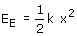
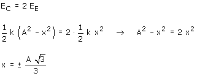

La energía elástica de un cuerpo que oscila vale:

La energía de oscilación, E, es la suma de las energías elástica y cinética y su valor es igual al valor máximo de la energía elástica (k A2/2). Entonces la energía cinética valdrá:

Como la energía cinética es el doble de la elástica:

Hay dos puntos, simétricos respecto al origen, donde se igualan las energías cinética y elástica